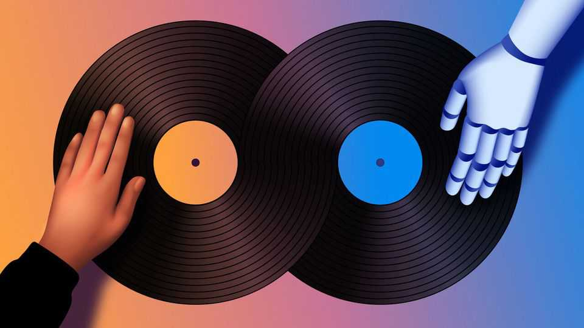
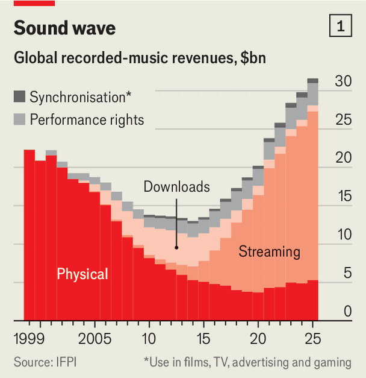
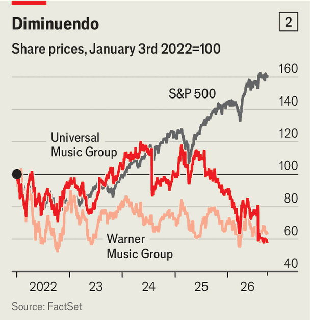

Record labels are in a spin over AI music
Should they fight upstart labs, or co-operate with them?

Oct 8th 2026
THE MUSIC industry is no stranger to technological upheaval. From vinyl to cassettes to CDs to streaming, the recording and selling of music has been in a state of constant revolution. The shift to streaming shook the industry hard. After the rise of illicit file-sharing in the Napster era, which eventually gave way to legal streaming, it took more than 20 years for revenue to return, even in nominal terms, to the level of the 1990s (see chart 1). Generative artificial intelligence brings a new age of disruption. It threatens to transform the whole process of making music itself.

Music made by AI is already making its presence felt, in the zeitgeist as “slop” as well as in the charts. There is more dross than ever. Alexis Lanternier, boss of Paris-based Deezer, says that about 90,000 entirely machine-generated tunes are uploaded to his music-streaming service a day—half the total. Spotify, the biggest streamer, says it has taken down 75m “spammy tracks” in the past year. Much of the slop is uploaded illegally by bot farms hoping to harvest fraudulent royalties. But many human artists use AI legitimately, to enhance their creativity. “It’s like Ozempic,” says Mr Lanternier. “Everybody is using it, but no one wants to say.”
A bigger question is the legality of AI-made music. Some record labels accuse AI-music labs of piracy and have sued. Some have settled, hoping to make more money from licensing than from lawsuits. Confusingly, some do both. As Mark Mulligan of MIDiA Research, a consultancy, puts it, all are grappling with the problem of how to stay in control of the industry when the ability to create music with AI lowers barriers to entry. Many top music executives cut their teeth (and their first record contracts) in the Napster era. They do not want to get caught napping again.
The stock market suggests investors are worried. The share prices of the two biggest listed record labels, Universal Music Group (UMG) and Warner Music Group (WMG), have lagged behind the overall market over the past few years (see chart 2). (Sony Music, a third big label, is not separately listed.) The relationships to watch are between the big labels and Suno, a controversial four-year-old American AI-music company last valued at $5.4bn (more than a third of WMG’s $14.7bn market capitalisation). This presents a natural experiment: UMG and Sony Music have sued Suno, doubling down with a case filed in September; WMG, once part of the original suit, has settled.

In their new case UMG, Sony Music and others accuse Suno of ripping off more than 60,000 copyrighted recordings, by artists from Avril Lavigne to Justin Timberlake, and ingesting them into its models. Under American copyright law damages can reach $150,000 per work, which may suggest the plaintiffs are pushing for a big payout (or exerting pressure to secure a juicy licensing deal).
Suno admits that the tens of millions of recordings used to train its models include copyrighted material. But it argues that it is “fair use” in law to learn musical styles and generate new, original music. The matter is unsettled: those in the creative industries have more than 100 lawsuits in America against AI labs, including Anthropic and OpenAI, many of which turn on whether fair use applies.
While the Suno cases go through the courts, WMG’s settlement is also attracting attention. The label has told investors that revenue from its AI partnerships will start flowing this financial year. They would be among the first AI deals in the entertainment industry to bring in real money. Robert Kyncl, boss of WMG, says the decision to settle with Suno was based on expediency: it might take years for the courts to rule on fair use. “If I can get a partner to give up their fair-use argument and start paying us, why would I wait?” he says.
The settlement itself may also herald big changes. In September, for instance, Suno introduced v6, which it says is its first family of models to be trained exclusively on licensed music from WMG and others. Artists and songwriters who opt in will share revenue with Suno when their work is used, based on Suno’s subscriptions. Mr Kyncl expects it to yield new revenue streams for artists, as fans create and post AI music derived from remixes or mashups of their repertoires. As an example, he suggests Fleetwood Mac’s “Dreams” overlaid with Aretha Franklin’s voice.
UMG has ambitions of its own for fan remixes. This year it announced licensing deals with Spotify and ElevenLabs, an AI audio startup, that would enable UMG’s material to be reworked by “superfans”. Sam Duboff, Spotify’s head of marketing, says there is demand. On some platforms, he reckons, unlicensed remixes and covers number 1bn streams a month; Spotify wants to regularise the market. Michael Nash of UMG says the company reckons 20-30% of streaming customers would pay up to twice their current subscription for access to AI-enabled superfan products.
The idea that superfans will want to become co-creators of music, rather than just listeners, is untested. Music executives point to other parts of the creative industries where fans alter material they enjoy for fun, from fan fiction to “modding” (modifying) video games. They hope that AI will spur similar audience engagement with music. Some also point to China, where modification on music-streaming platforms such as Tencent Music Entertainment is gaining popularity. Chinese trends, though, do not always travel west.
A lot depends on how many leading performers opt in. Mr Nash hopes 1,000 UMG artists will. But so far UMG, WMG, Spotify and Suno have named no big stars who have signed up, suggesting that qualms related to artistic integrity remain high. And until top names agree to take part, it is hard to know how enthusiastic their fans will be.
MIDiA’s Mr Mulligan says partnerships between record labels and makers of AI music have a defensive quality: the industry’s giants, whether labels or streaming platforms, want to reinforce the status quo. “They want to control AI, rather than have AI control them,” he says. But they might be bypassed anyway. He believes the new technology will make it easier for new artists to make a splash without record deals, as well as enabling new streaming platforms to emerge. “You end up with a more fragmented music world.”
Executives of UMG and Spotify disagree. They bet that scarcity—the hallmark of the superstar era—will prevail. Mr Nash of UMG, which boasts Taylor Swift among its signed musicians, says the main beneficiaries of lower barriers to entry are not new artists but “fraudsters who carpet-bomb [streaming] services”. Scarcity comes from clever marketing and audience development. If AI learns how to do that, too, the industry will be in deep trouble. ■
Editor’s note (October 5th 2026): This article has been amended to delete material that Suno says was discussed prematurely.